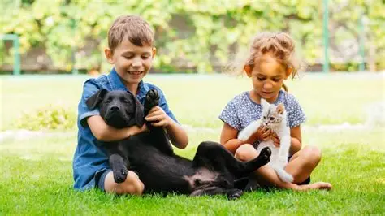

Procure
Consulte os animais cadastrados nos murais de procurados e encontrados.
O AchePet é uma plataforma criada para ajudar animais perdidos a encontrarem o caminho de volta para casa.
Nosso objetivo é facilitar a comunicação entre pessoas que perderam seus animais e aquelas que encontraram um pet, reunindo informações importantes em um só lugar.
Acreditamos que, com a ajuda da comunidade, podemos aumentar as chances de cada animal reencontrar sua família.

Conectar pessoas e facilitar o reencontro entre animais perdidos e suas famílias, tornando a busca mais simples, rápida e acessível.
Todos podem ajudar nessa busca.
Consulte os animais cadastrados nos murais de procurados e encontrados.
Cadastre um animal perdido ou encontrado com suas principais informações.
Compartilhe as informações e ajude a aumentar as chances de um reencontro.
Perder um animal de estimação pode ser uma experiência muito difícil. Da mesma forma, encontrar um animal perdido e não saber como localizar sua família também pode ser complicado.
Pensando nisso, criamos o AchePet como uma forma de reunir essas informações em um só lugar e facilitar a colaboração entre as pessoas.
Cada pessoa pode fazer parte dessa busca. Uma informação, uma divulgação ou um simples compartilhamento pode ajudar um animal a voltar para casa.
Faça parte dessa rede e ajude a transformar uma busca em um reencontro.
CADASTRAR ANIMAL